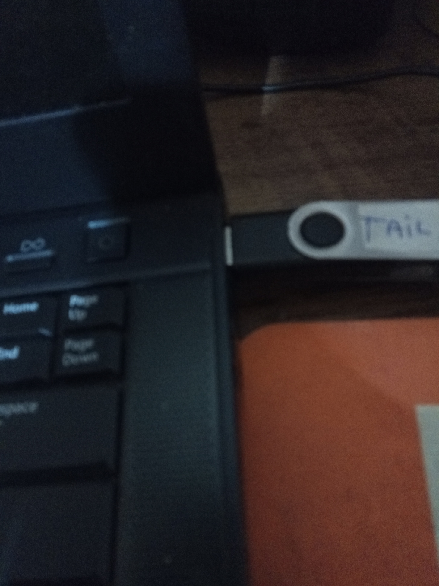
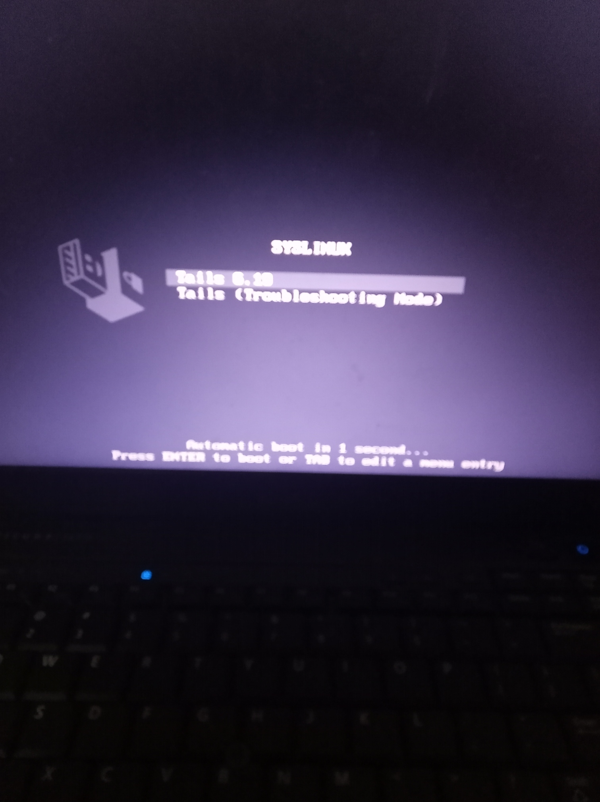
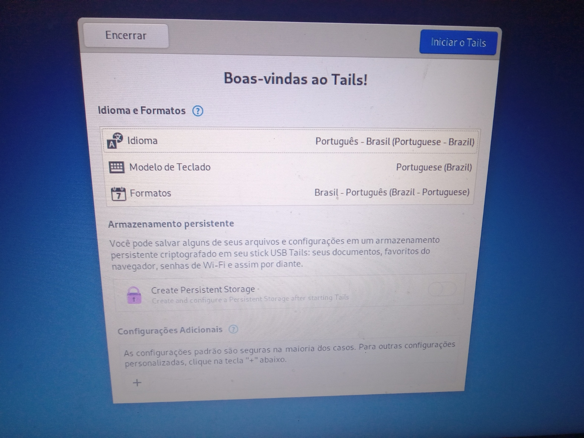
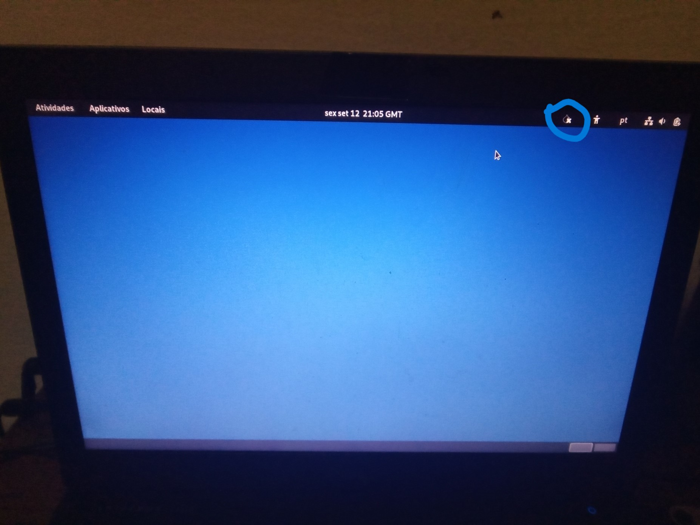
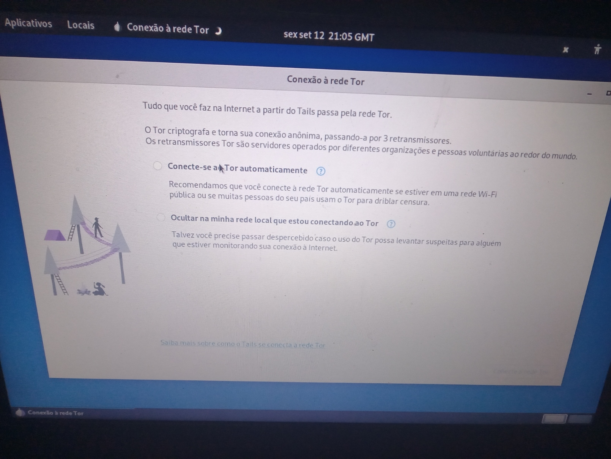
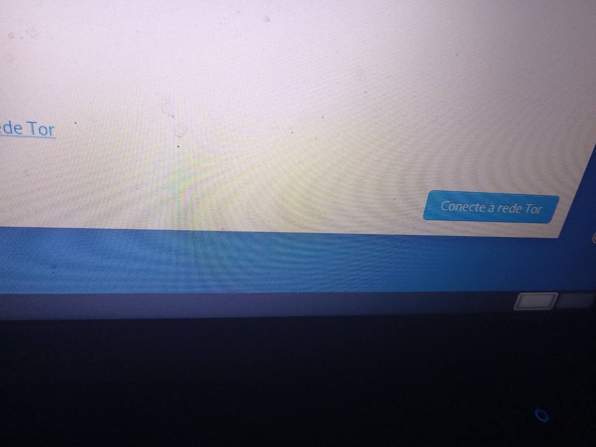
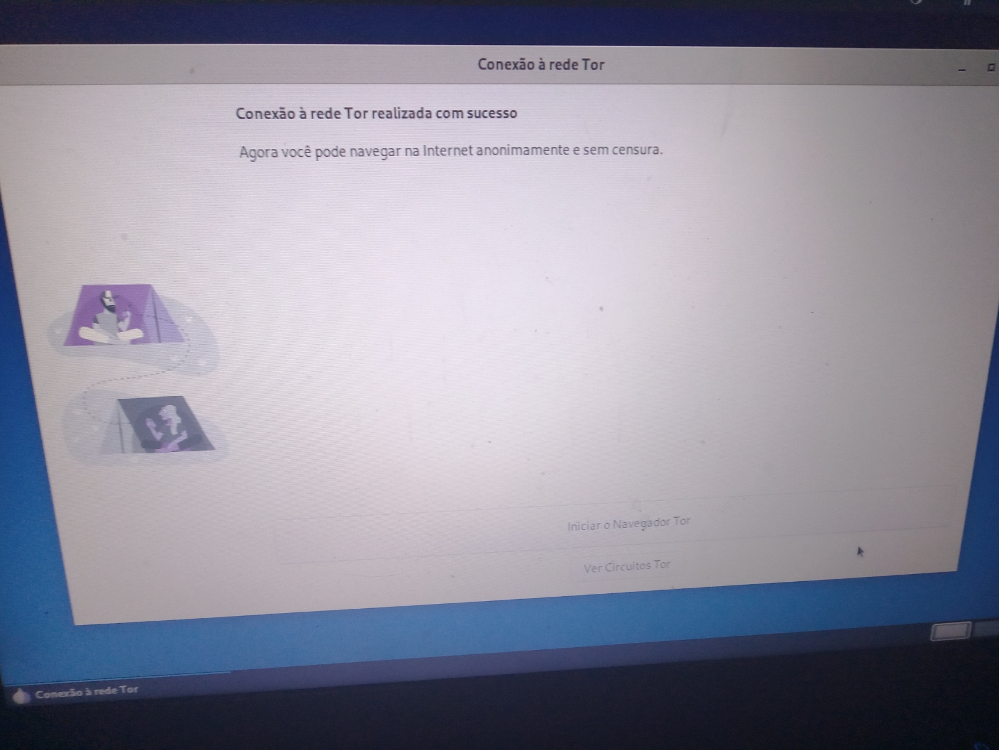
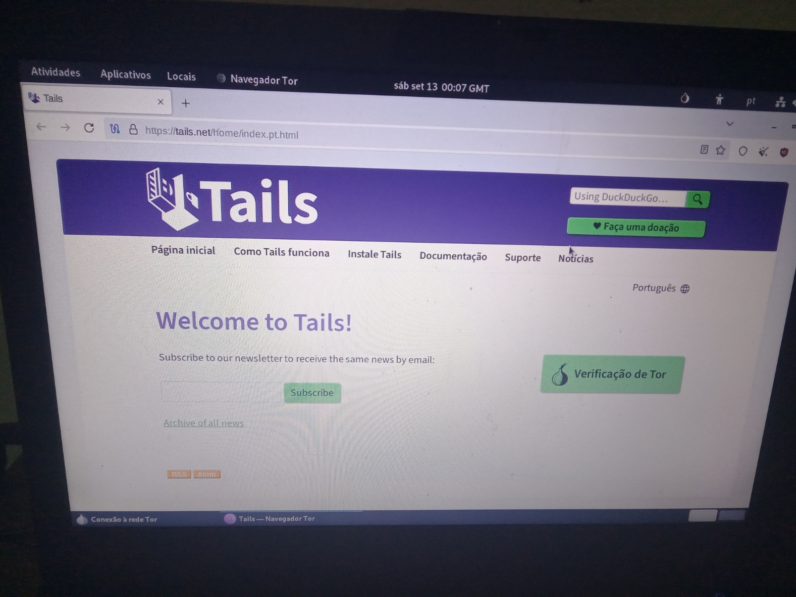

TailsOS
Bem sobre o TailsOS ele é uma distro linux que basicamente
tem como objetivo o anônimato em si, já que só nesse sistema operacional, ele já é
conectado na rede tor, o que significa que ele não precisa de VPN, além de que também
o lado bom dele é que ele não salva nada em um HD ou SSD, o que significa que você não terá
nada seu salvo.
E bem sobre esse sistema operacional, ele foi usado por um ex-agente da CIA e NSA, chamado
de Edward Snowden que em 2013 vazou planos de espionagem por parte do governo estadunidense contra as pessoas
na internet, e bem quando tentaram o encontrar, nunca conseguiram, tudo porque ele usava o TailsOS, e sim
por mais que pareça inacreditável, esse sistema operacional é uma arma contra governos autoritários e a vigilância.
Como fazer a instalação:

Na primeira vez você chega nessa tela
e logo irá ter que ir na parte de instalação.
Segundo passo: Instalação USB

Após isso, vamos chegar nessa parte
onde você terá que selecionar a parte de USB.
Terceiro passo: Instruções

Agora é só seguir as instruções do TailsOS, e verifique se a ISO foi instalada
de forma correta.
Quarto passo: Rufus

Bem isso aqui é pra quem está no windows
e bem se caso você não tem instalado o rufus vá nessa página: https://rufus.ie/pt_BR/ até porque
ele vai servir pra fazer o pen drive bootável e bem após ter terminado a instalação da ISO do TailsOS é só inserir o pen drive que você queria
colocar o TailsOS e fazer o pen drive bootável com o rufus (Lembrando que se tiver coisa no pen drive, ele vai formatar então... recomendo você guardar
algumas coisas na nuvem ou em um outro computador.)
Certo, agora que você aprendeu a instalar o TailsOS no pen drive bootável, agora abaixo estará uma demonstração de como se usa.
Como se utiliza o TailsOS?
Primeiro passo: Coloque o pen drive na sua USB.
 Coloque seu pen drive com o TailsOS no seu USB e ligue o computador e clique com o botão
de select boot (No meu caso foi o f12, a maioria dos computadores podem ser diferentes, uns sendo f9, f11, esc, del ou outra tecla, procure o seu.) e selecione
o USB.
Segundo passo: Iniciar o TailsOS
 Após você clicar em iniciar com USB aparecerá essa tela
que então é só clicar nessa primeira opção apertando enter.
Terceiro passo: Inicio
 Aqui no início do TailsOS você pode selecionar o idioma que querem
normalmente ele vem em inglês, mas você pode alterar pro idioma que quiser
e após você escolher o idioma é só clicar em "Iniciar Tails"
Quarto passo: Área de trabalho
 Aqui na área de trabalho você ainda não está conectado na rede tor
e bem para isso você precisa se conectar na internet wifi de onde você está e depois clicar nessa cebola acima para se conectar a rede tor.
Quinto passo: Conectando-se na rede tor
 Após clicar na cebola é só clicar neste "Conecte-se ao Tor automaticamente"
Sexto passo: Conectando-se na rede tor 2
 Após isso quando você selecionar para se conectar na rede tor automaticamente irá aparecer esse botão azul, clique nele.
Sétimo passo: Tor browser
 Agora irá aparecer essa tela e é só você clicar em "Iniciar navegador tor"
Oitavo passo: Navegue de forma anônima
 Após isso tudo que você passou, irá abrir essa tela, agora é só você navegar
de forma anônima e segura, se divirta meu caro!
Como atualizar o tailsOS?
Bem sobre atualizar o TailsOS sei que pode parecer chato, mas você teria que formatar o pen drive e refazer a instalação do tailsOS tudo de novo, já que
a atualização dele é manual, até porque se fosse atualização automática iria estragar seu anonimato, então... Sim você terá que refazer a instalação e o pen drive bootável
do TailsOS.
Espero ter te ajudado até aqui, até mais caro visitante!